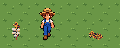
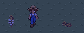
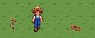
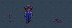
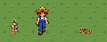
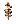
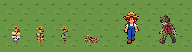
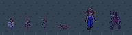

Native1x equals4screenpixels at FHD. Runtime not integrated. World relight is reference only for UI: HUD is not relit.
Contract / Checks / Review log
Owner-accepted measured visual differences: fresh_braid_dimensions
1frames / 0.55s / static or one-shot
Native1x / FHD4x / night4x / light / dark / checker / grass
Ground line: new sprite / farmer / nearest existing reference


1frames / 0.55s / static or one-shot
Native1x / FHD4x / night4x / light / dark / checker / grass
Ground line: new sprite / farmer / nearest existing reference


1frames / 0.55s / static or one-shot
Native1x / FHD4x / night4x / light / dark / checker / grass
Ground line: new sprite / farmer / nearest existing reference


Fresh remains approved. Only wilted and spent are new review candidates. One family scale; same 16x24 canvas and (8,20) pivot.
Native 1x / FHD integer 4x / night 4x. All feet share one ground line.

